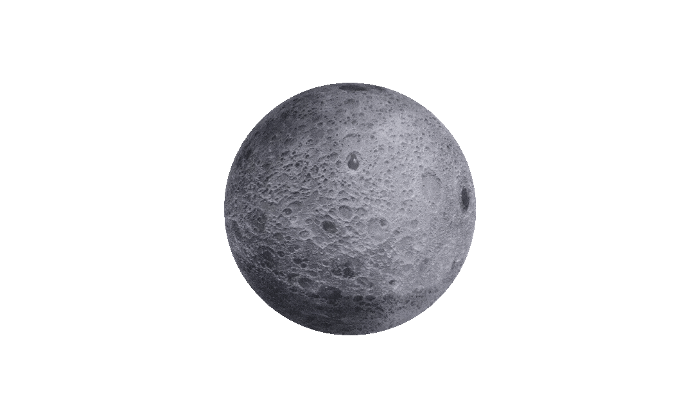

Y-JACI / Terminal Principal
Centro de Comando e Controle
Monitoramento Ativo de Sobrevivencia e Matrizes de Suporte a Vida
Uplink DSN Estabelecido
Y-JACI / Terminal Principal
Monitoramento Ativo de Sobrevivencia e Matrizes de Suporte a Vida
Uplink DSN Estabelecido